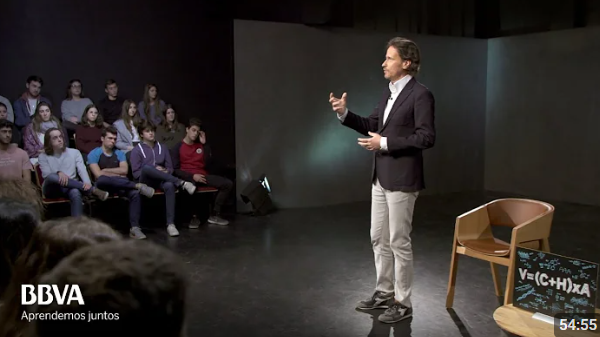
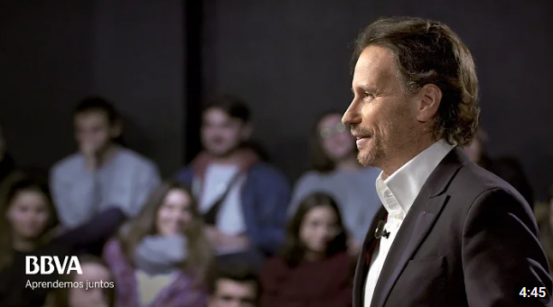
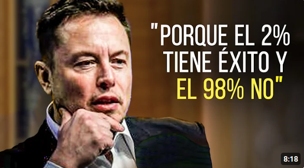
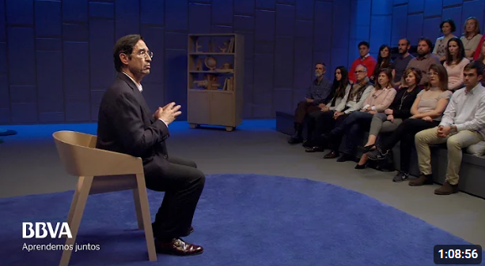

¿Cómo empezar desde CERO? llados
El valor de tu actitud Victor Küppers

Por qué es tan importante aprender a escuchar Victor Küppers

Uno de los discursos más reveladores de la historia Elon Musk

En todo ser humano hay grandeza Mario Alonso Puig

Cómo conectar con tu propósito y levantarte cada mañana con ilusión | Sebastián Lora